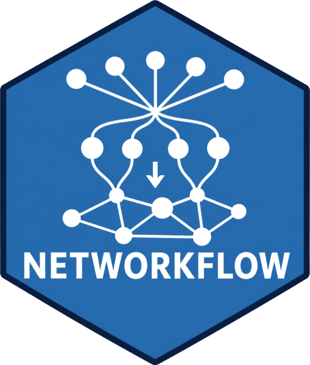

Position the labels of clusters in network and alluvial plots
Source:R/prepare_label_networks.R
prepare_label_networks.Rdprepare_label_networks() computes, for each category of
cluster_label_column, the mean coordinates of its nodes, where the label
of the cluster will be drawn by plot_networks(): label_x and
label_y are the centre of gravity of the cluster.
prepare_label_alluvial() chooses the time window where the label of each
cluster of an alluvial will be drawn: the median window of the windows
where the cluster exists. The chosen row gets the label in a label_x
column, which plot_alluvial() uses.
Usage
prepare_label_networks(
graphs,
x = "x",
y = "y",
cluster_label_column = "cluster_label"
)
prepare_label_alluvial(
alluv_dt,
window_column = "window",
cluster_label_column = "cluster_label"
)Arguments
- graphs
A
tbl_graphor a list oftbl_graphs with coordinates (seelayout_networks()).- x, y
Character scalars, the node columns with the coordinates (
"x"and"y"by default).- cluster_label_column
Character scalar, the column with the labels:
"cluster_label"(name_clusters()) by default, or a cluster column.- alluv_dt
A data frame created with
networks_to_alluv().- window_column
Character scalar, the column of
alluv_dtwith the time windows ("window"by default, as created bynetworks_to_alluv()).
Value
prepare_label_networks(): the same object as graphs with node
columns label_x and label_y. prepare_label_alluvial(): alluv_dt
with a label_x column, holding the label on the rows of the chosen
window and missing elsewhere.
Examples
network <- build_network(
nodes = subset(Nodes_stagflation, source_type == "Stagflation"),
directed_edges = Ref_stagflation,
source_id = "source_id",
target_id = "target_id",
method = "similarity",
edges_threshold = 1
)
#> ℹ Coupling (`biblionetwork::biblio_coupling()`) with "similarity": ties
#> weighted by the idf-weighted cosine of the two lists of targets, after Shen
#> et al. (2019), between source_id entities sharing target_id entities.
#> ℹ Pairs sharing fewer than 1 target_id are dropped (`edges_threshold`).
#> ℹ Nodes without any edge are removed (`keep_singleton = FALSE`).
network <- add_clusters(
network,
clustering_method = "leiden",
objective_function = "modularity",
seed = 123,
verbose = FALSE
)
set.seed(1)
network <- layout_networks(network, node_id = "source_id", layout = "fr")
network <- prepare_label_networks(network, cluster_label_column = "cluster_leiden")
unique(tidygraph::as_tibble(network, active = "nodes")[c("cluster_leiden", "label_x", "label_y")])
#> # A tibble: 4 × 3
#> cluster_leiden label_x label_y
#> <chr> <dbl> <dbl>
#> 1 02 2.79 -1.13
#> 2 01 -6.64 1.38
#> 3 04 1.39 2.49
#> 4 03 2.39 4.06